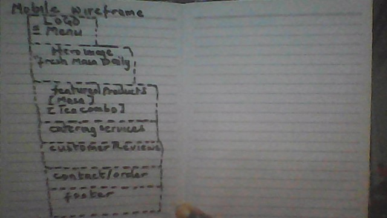
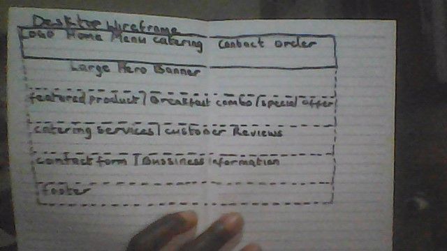

Site Name
Masa Delight Abuja
The name was selected because it clearly represents a traditional Nigerian masa business located in Abuja. It is simple, memorable, and communicates the purpose of the business while appealing to local customers looking for freshly prepared masa and breakfast meals.
Optional Domain: masadelightabuja.com
Site Purpose
Masa Delight Abuja is a promotional website for a small local food business. The website provides information about available masa varieties, breakfast combo packages, prices, catering services, and business contact information. Visitors can also submit inquiries or order requests through an online form.
Scenarios
- What breakfast combinations are available and how much do they cost?
- How can I place an order for an office meeting or family event?
- Does Masa Delight Abuja provide catering services for birthdays, weddings, and other events?
- Where is the business located and how can I contact them?
Color Scheme
Used for headings, navigation, buttons, and important accents.
Used for highlights, call-to-action buttons, and accent colors.
Used as the website background color.
Typography
- Poppins – Used for page headings and navigation.
- Roboto – Used for body text, forms, and paragraphs.
Wireframes
Draw a simple black-and-white wireframe of the homepage for both mobile and desktop layouts. Take a clear photo or scan the sketches and save them inside the images folder.
Mobile View

Desktop View
